grafana-plugin agent, 2026-10-08. Grafana 13.2.1 at localhost:3001, rum-api at localhost:8080, plugin built from plugins/ouo-rum-app on branch phase-7b-ux-masking. Browser: Claude desktop built-in browser, viewport emulated at 1400x900 (screenshots are scaled to 800 wide) and 800x900 for the stacked check.
| Check | Method | Result |
|---|---|---|
| Replay panel stays visible while the page scrolls (two-column layout) | Web session 6843eaa9 (26 events, rrweb): scrolled the page 5 wheel ticks over the Replay panel, read getBoundingClientRect() of both panels | replay top = 8px, timeline top = -188px, page header at -342px (figure 2) |
| Timeline scrolls inside its own container | Mobile session e2a746a8 (45 events, frames): 10 wheel ticks over the list | list scrollTop 1000 of 2972, Replay panel unchanged (figure 3) |
| Current event auto-scrolls into view during playback without moving the page | Seeked the frame player scrubber to the end (frame 69/70) | active index 44/45, list scrollTop 2222 (max), active row inside the list box, page header offset unchanged at -142px (figure 4) |
| Replay panel fits the viewport | Portrait frames session at 1400x900 | Replay panel 821px tall, Timeline panel stretched to the same 821px (was 851px with the 70vh stage cap, taller than the 860px available) |
| Stacked layout below 900px, no sticky | Viewport 800x900, same mobile session | one 736px column, Replay first (top 333px) then Timeline (top 1152px), position: static (figure 11) |
| Replay column shows duration + kind | Sessions page, Replay sorted desc | "19m 45s rrweb", "15m 37s frames", "–" for no replay; rum-api shipped replay_duration_ms during this run so the icon fallback was only exercised by the Jest test (figures 9, 10) |
| Sortable headers flip and show an indicator | Clicked Started, Status (twice), Replay (twice); read data-sort-key/data-sort-dir and the rendered column | started asc puts 00:29:27 first; status asc = 79 healthy, 11 errored, 10 crashed, desc reversed; replay desc longest first, asc dashes first (figures 6 to 10) |
| Build gates | npm run -w plugins/ouo-rum-app typecheck | lint | test | build | all green, 52 Jest tests (sort, scroll, replay summary, SessionsTable, formatDuration carry) |
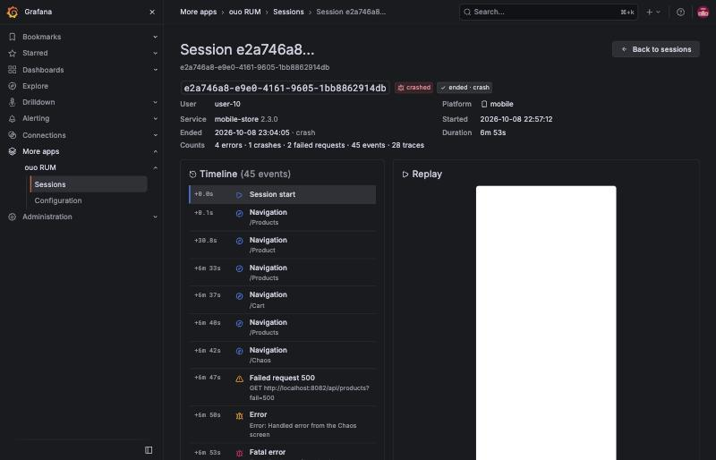
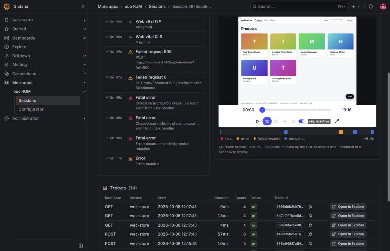
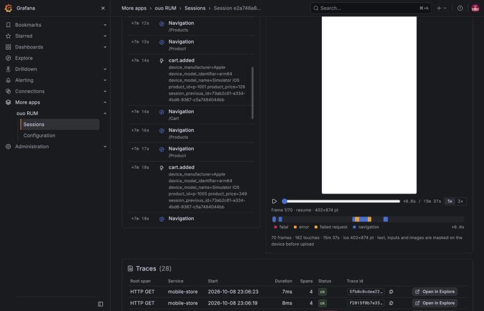
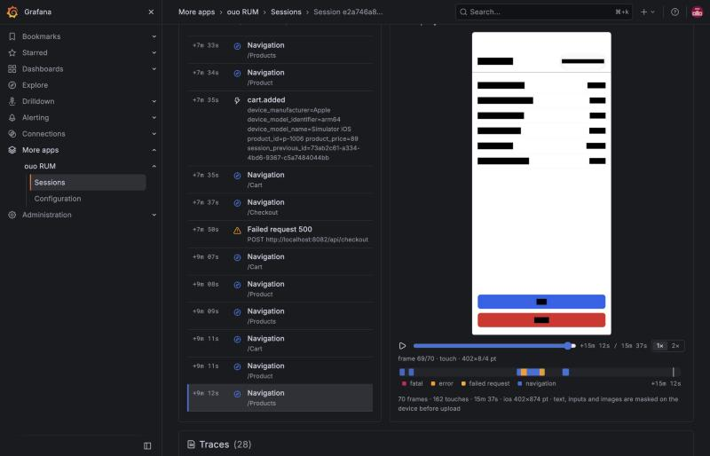
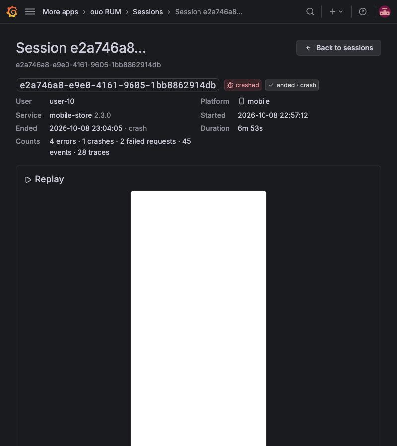
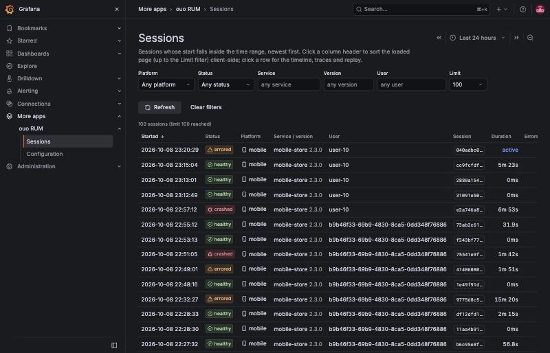
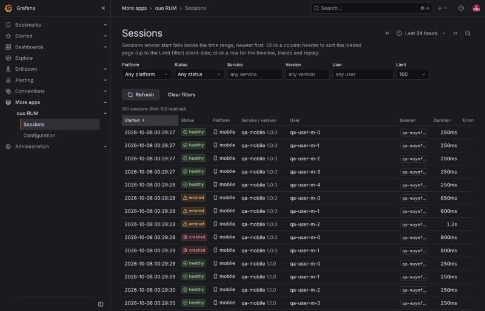
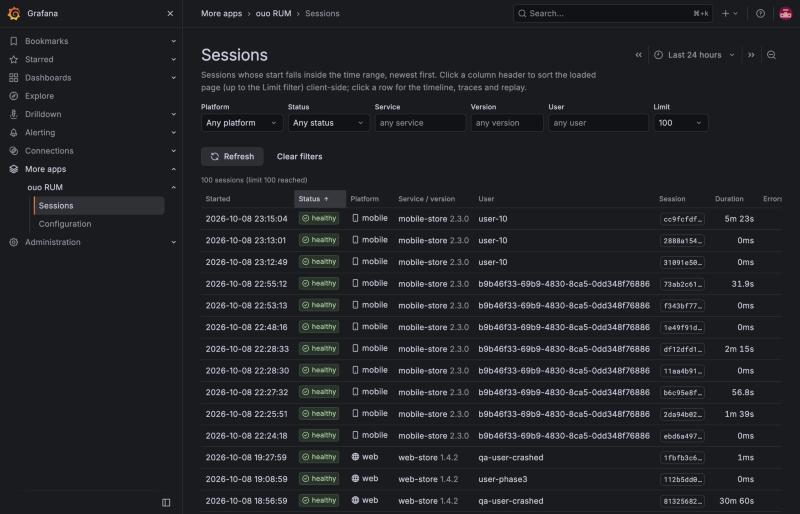
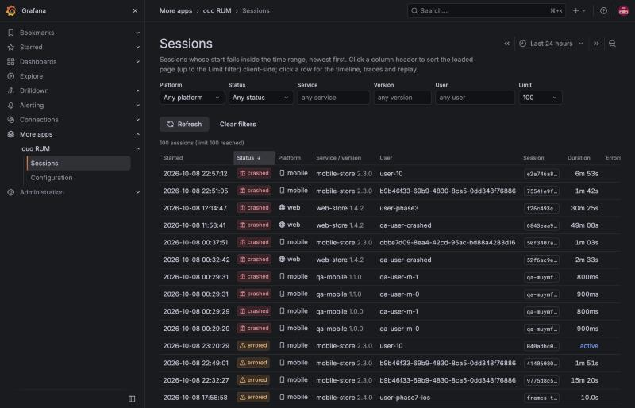
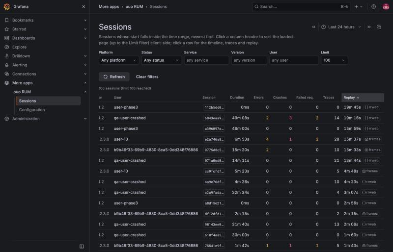
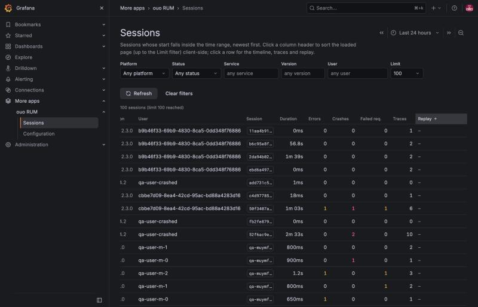
865.js) that existed in the mounted dist/: the plugin's static file list is built when the plugin loads, so a build that adds chunk files needs docker compose restart grafana, not just a hard reload. Recorded in kb/grafana-app-plugin.md.formatDuration printed "4m 60s" for 299.6s (seen on the marker bar); it now carries into the minute ("5m 00s").